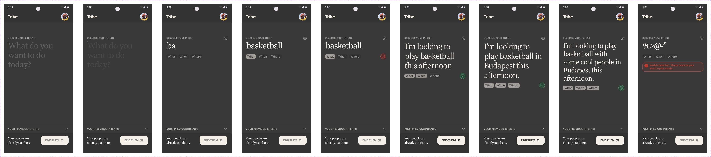
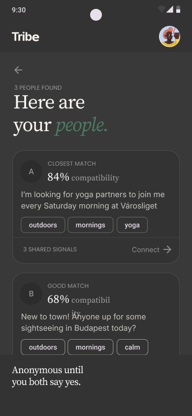
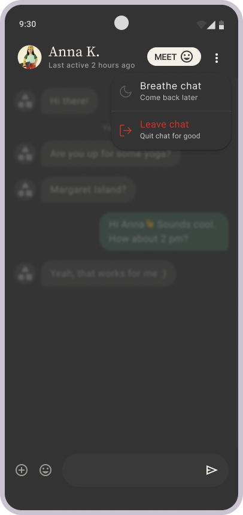

What do you want to do today?
"The design problem wasn't matching. It was building enough safety for someone to type the thing they actually want."
This case study documents the complete MVP architecture and human-AI interaction systems designed for handoff. The focus remains on advanced technical systems design, human-AI latency mitigation, and the established validation frameworks required for future deployment phases.
Connect strangers through intent,
not profiles.
A social app where one prompt replaces the profile. The whole product rests on a single text field — and the trust required to use it honestly.
Tribe connects people through a single prompt — not a profile, not a browse interface. The user types what they want to do, the AI matches them with people looking for the same thing, and connection happens before either party knows who the other is.
The entire product hangs on one text field. Making someone feel safe enough to be honest in it was the design problem — not the matching algorithm.
Current platforms prioritise short-term attention.
The gap: long-term trust.
The market is saturated with engagement-first products. The unmet need was safer connection — intent-based, not identity-first.
The brief was an intent-based social network for Budapest. The real brief, once I'd mapped the competitive landscape, was: how do you get someone to type what they actually want — not a curated version of it — into a field connected to a stranger-matching algorithm?
That's a trust problem before it's a product problem. It shaped every design decision that followed.
Map the vulnerability states
before opening a design tool.
Human factors gave me the frame. Three distinct states between intent and connection — each one a specific design problem.
The interaction gap diagram above was the first deliverable — before any screens. Three human states in the critical path from intent to connection. Each one mapped to a specific design response. This became the brief for every decision that followed.
Research Resources That Shaped Design Decisions
Five moments of vulnerability. Five design responses.
Not aesthetic choices. Each decision addresses a specific moment where trust could break — before it is established.
Happy path. Fallback logic. The full product — mapped in structure before it existed in pixels.
Edge cases carried the most design weight: the no-match screen, the breathe chat, the safety exit. These were where the product's character was decided — not in the happy path.
Functional sitemap + user flow hybrid. Every screen state, every decision point, every safety exit branch — mapped before any visual design.
Core happy path (Screens 1–10) + three fallback states with key states documented per screen. The fallbacks were designed before the happy path UI was finalised.
Full IA. Not everything survived the dev sync.
Three generations of input validation designed — two cut after synching with developers on latency, token cost, and structural reliability. What shipped earned it. The rest of the architecture: match logic, processing states, and safety exits, was built around the system that survived.
How might we teach users what's needed for prompting that leads to better match quality?


{"tags":["x","y"]}. LLM returns conversational text. Fatal parse error. Every call needs a retry wrapper — just to extract two words.

A teachable wait makes AI reasoning visible — transparent processing builds trust. The user always knows exactly what's happening.
GPS ask arrives mid-processing — the only moment it reads as practical, not invasive. My call: delete location post-match and use aggregated data for analytics — to increase user safety and trust.


Initials and match score — no photos. Identity reveals only after both say yes, removing the power imbalance by design.

Warm orange, not red. Nearby intents surface below — real options, no manufactured optimism.
One chat at a time —
but what happens when the user wants to leave?
No chat search, one active conversation. The constraint is intentional: users in one chat take it more seriously. When choices are limited, people value what they have. The Breathe Chat (24h pause) and Safety Exit are the pressure valves — without them, a single-chat system becomes a trap. The constraint only works because the exits are designed in. A deliberate bet against dopamine loops — no infinite scroll, no variable reward. One thing to care about, not a feed to scroll.


A 24h pause on the chat — reframes stepping away as temporary, not an exit. The user keeps the connection without the pressure.

Five exit reasons — "I'm feeling unsafe" separated in red at the bottom. Casual exit stays easy; the safety path stays findable without scanning.

Tapping opens a report inline — no new screen. Zero friction at the highest-stress moment.

Report appears in the same row — no navigation away. The action completes exactly where the user already is.
What I'd do differently. What I'd do the same.
Send a questionnaire before any screen was drawn. Real user intent data would have sharpened the input validation from day one.
Push back on anything that doesn't serve the user. Every constraint that survived the dev sync survived because it had a human reason behind it.
One metric: prompt quality in correlation to match quality. That correlation — or the absence of it — would tell me whether the core thesis holds.